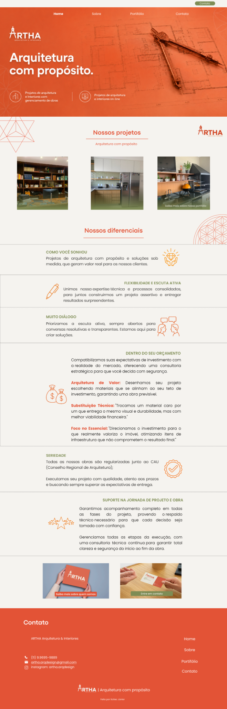

Desenvolvimento
HTML, CSS, JavaScript, Python, C
OLÁ, EU SOU A ISABELA
Tenho interesse em entender problemas, explorar possibilidades e desenvolver soluções que façam sentido na prática. Busco aprender constantemente, enfrentar novos desafios e transformar conhecimento em resultados reais por meio da tecnologia.
Ferramentas e tecnologias com as quais já tive contato em estudos, projetos e experiências profissionais.
HTML, CSS, JavaScript, Python, C
Figma, Wireframes, Prototipação, Design de Interfaces
Power Apps, Power Automate, Dynamics 365, Power Pages
Git, GitHub, Power BI, Excel, SQL
Experiências que contribuíram para meu desenvolvimento técnico, trabalho em equipe e construção de soluções reais.
Estagiária de Tecnologia
Atuação no desenvolvimento de soluções com Microsoft Power Platform e Dynamics 365, com foco em automação, integrações e resolução de demandas reais.
Atuei em um ambiente de tecnologia voltado à criação e evolução de soluções utilizando Microsoft Power Platform e Dynamics 365, lidando com demandas reais de clientes e diferentes necessidades de negócio.
Desenvolvi e ajustei soluções em Power Apps, Power Automate, Power Pages e Dynamics 365, além de utilizar JavaScript em customizações. Também trabalhei com integrações via API, automações e validações de dados.
Minha rotina envolvia entender a necessidade, investigar caminhos possíveis, testar soluções e ajustar implementações. Em algumas demandas, também tive contato direto com clientes e com o suporte da Microsoft.
A experiência fortaleceu minha capacidade de aprender novas ferramentas rapidamente, analisar problemas de forma prática e buscar soluções aplicáveis, além de ampliar minha experiência com trabalho em equipe e comunicação técnica.
Gerente de Gente e Assessora de Design e Concepção
Atuação em liderança, desenvolvimento de membros e participação em projetos com clientes reais, unindo organização, tecnologia e colaboração.
Na Scitec Júnior, participo de um ambiente multidisciplinar que combina gestão, desenvolvimento de pessoas e projetos reais para clientes.
Como Gerente de Gente, atuo no acompanhamento e desenvolvimento de membros, integração de novos integrantes e organização de processos internos. Também conduzi o processo seletivo de 2026, com mais de 100 inscritos, 31 trainees e 21 membros efetivados.
Além da atuação em gestão, participei de projetos para clientes reais, principalmente na construção de interfaces e protótipos no Figma, passando pelo entendimento da demanda, organização da solução e desenvolvimento visual.
A experiência ampliou minha capacidade de liderança, organização e comunicação, além de reforçar minha habilidade de trabalhar com problemas abertos, colaborar com diferentes pessoas e transformar demandas em soluções estruturadas.
Membro de Projeto | Ativamente
Participei do projeto Ativamente, iniciativa da Enactus voltada à neuroplasticidade e ao bem-estar de pessoas idosas, por meio da realização de oficinas presenciais em instituições de longa permanência.
Fui responsável por prospectar possíveis instituições parceiras, realizando contatos por telefone, apresentando a proposta do projeto e organizando o agendamento de oficinas.
Também fui responsável pelo planejamento e criação de uma oficina, definindo atividades e estruturando a dinâmica que seria aplicada com os participantes.
Como membro do projeto, participei presencialmente de oficinas em instituições de longa permanência, conduzindo atividades junto aos idosos residentes.
A experiência fortaleceu minha comunicação, organização, iniciativa e capacidade de lidar diretamente com pessoas, além de proporcionar vivência prática em planejamento e execução de atividades com impacto social.
Uma seleção de projetos acadêmicos, de desenvolvimento e prototipagem.
Projeto acadêmico · mar/2026 – jul/2026
Sistema desenvolvido em TypeScript para a disciplina de Programação Orientada a Objetos.
Projeto acadêmico · mar/2026 – jul/2026
Projeto em Python para classificação automática de resíduos utilizando redes neurais convolucionais.

Scitec Júnior · abr/2026 – mai/2026
Protótipo de site para um escritório de arquitetura, desenvolvido no Figma.

Projeto pessoal · mar/2026 – mai/2026
Protótipo de site para uma empresa de engenharia civil, desenvolvido no Figma.
Campus São José dos Campos
Formação interdisciplinar que integra tecnologia, computação e diferentes áreas do conhecimento, com foco em desenvolvimento, análise e resolução de problemas.